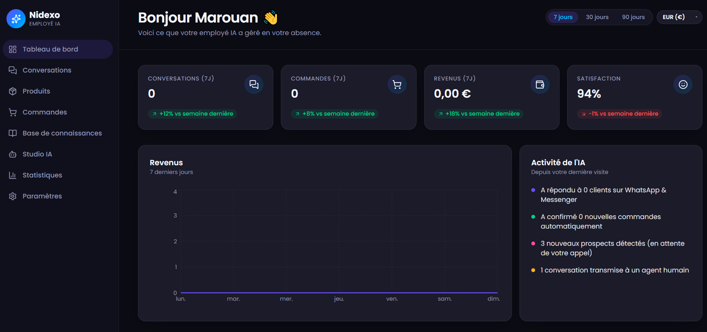

De l’expérience terrain à Nidexo : construire l’IA de demain
Chaque projet d'envergure demande du temps pour mûrir. Nidexo n'est pas né d'une idée passagère ni d'une simple tendance : c'est le fruit de plus de dix ans d'expérience dans la communication digitale et la transformation numérique. Voir Nidexo prendre vie aujourd'hui, c'est comme accueillir un nouveau-né. C'est un projet porté par la passion, façonné par la patience, et pensé dès le premier jour pour rayonner à l'échelle internationale.
Mon parcours au sein des institutions publiques et auprès des PME m'a confronté à un défi récurrent : la difficulté d'assurer un service client réactif et personnalisé sans épuiser ses ressources. Mais la véritable étincelle est venue d'un échange quotidien à la maison. En partageant nos expériences avec mon épouse, qui travaille directement dans le financement et les crédits accordés aux PME, nous avons croisé nos visions. Nous n'avons pas seulement identifié un problème de communication, mais aussi son impact financier direct sur la croissance des entreprises.

C'est à l'intersection de la stratégie de communication et de la réalité économique qu'est née Nidexo. Nous avons conçu une plateforme d'intelligence artificielle qui ne se contente pas d'automatiser des réponses, mais qui permet aux entreprises de bâtir une relation de confiance et de développer leurs ventes en toute simplicité. Développée selon les standards européens et internationaux les plus rigoureux, Nidexo a été pensée pour franchir les frontières et accompagner les PME partout dans le monde.
Rejoignez l'aventure Nidexo
Découvrez comment nos employés virtuels propulsés par l'IA peuvent transformer votre relation client dès aujourd'hui.
Essayer Nidexo Maintenant